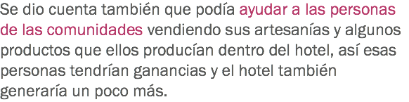

Manejar de manera sostenible los negocios de hotelería


![El hotel de María es sencillo, con 10 habitaciones, decorado con detalles y colores que se usan regularmente en la zona. Sin embargo, el hotel de María no genera suficientes ingresos para poder sostenerlo en la manera en que está planeado. Los gastos fijos de los servicios son muy altos, y no logra bajarlos, al contrario cada vez suben más. Los clientes siguen siendo los mismos. Una opción que María había pensado era subir los costos de las habitaciones, pero eso en vez de ayudar iba a terminar alejando a sus clientes.](images/u6474-26.png)


![Con el paso del tiempo María se ha ido desmotivando y está pensando en cerrar el hotel porque son muchos problemas y los ingresos no le permiten resolverlos. En esos días de desesperación, un cliente llamado Joe, estaba de visita y alcanzó a escuchar una discusión que tuvo María con uno de sus proveedores porque no había podido pagarle y el proveedor estaba insistiendo en que se le realizara el pago. Joe esperó a que el proveedor se fuera y abordó a María, le preguntó cuál era el problema y María le platicó la situación en la que se encontraba ahora el hotel y que estaba pensando en cerrarlo porque ya no podía más con las presiones. Joe pensó en la problemática y le ofreció a María que convirtiera su hotel en un hotel sostenible. Le dijo que a veces tienen que llegar estos momentos de crisis para lograr cambios importantes en el negocio y que éste era el momento de hacer cambios, que la mejor opción no era cerrar si no cambiar. Joe le explicó que tenía un bonito hotel y que el lugar en donde estaba era muy bello y no muy conocido.](images/u6480-22.png)


![Con el paso del tiempo el hotel de María empezó a crecer y tuvo la necesidad de contratar personal nuevo para diferentes áreas. Fue a las comunidades más cercanas a buscar personas que quisieran trabajar y después de elegir al personal, María buscó a Joe para que le ayudara a capacitarlos y entendieran cómo funcionaba un hotel sostenible, por supuesto le ofreció venir al hotel con todos los gastos pagados, así que Joe aceptó con gusto y dio la capacitación. Los empleados quedaron fascinados con el uso de la naturaleza para la generación de servicios y sin lastimar el ecosistema, gracias a esto decidieron ayudar a María para que el hotel estuviera en perfectas condiciones y funcionara a la perfección.](images/u6525-13.png)


![María se dio la oportunidad de viajar a un hotel sostenible, quiso darse una vuelta para ver qué otras cosas podrían ayudarle, se dio cuenta que no estaba reciclando nada y que era necesario para no lastimar al medio ambiente y para ahorrar un poco más en los gastos. Volvió a su hotel y empezó a investigar cómo podía reciclar, empezó con la cocina y buscó recetas en las que podía reciclar comida sin afectar los sabores, calidad y gusto, al contrario eran recetas deliciosas y así ya no tiraba tanta comida, después decidió hacer una pequeña planta de tratamiento de agua para reutilizar el agua, hizo una inversión un poco fuerte pero vio que estaba funcionando a la perfección, comenzó a ahorrar al poco tiempo.](images/u6543-22.png)



![María convirtió su hotel en un hotel sostenible y gracias al cambio logró estabilizar las finanzas, logró generar empleos a las personas de las comunidades, logró ayudar a las personas de las comunidades vendiendo sus productos dentro del hotel, logró generar sus propios servicios sin lastimar al medio ambiente y creó actividades locales como música, danza. En unos pocos años, el hotel de María había crecido de una manera importante y su énfasis en el cuidado del medio ambiente había hecho del hotel un gran atractivo turístico que cada vez más personas deseaban conocer.](images/u6555-16.png)
Haz clic en Regresar para volver al inicio.